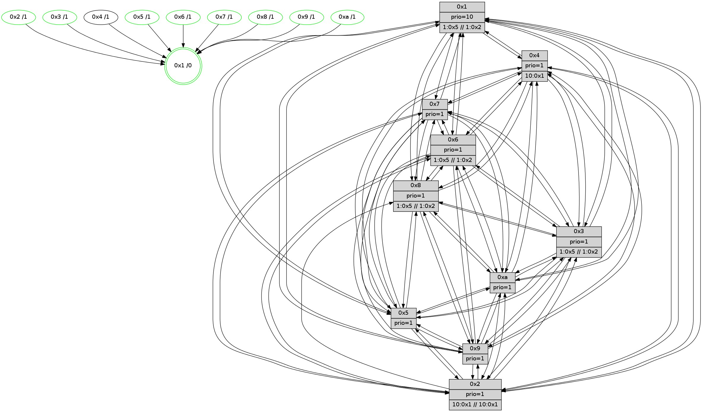

>> << IDX [start] -100 -25 -5 +0 +5 +25 +100 [555.272794962]
 Previous packets
----------------------------------------------------------------------
550.544009 beacon01(faad) #0 coord=01,02,03,04,05,06,07,0a,09,08 cycle=688.0ms assoc
-- color-indic=1 64 0b e1
550.553991 beacon02(faad) #0 coord=01,02,03,04,05,06,07,0a,09,08 cycle=688.0ms assoc 64 98 d0
550.563994 beacon03(faad) #0 coord=01,02,03,04,05,06,07,0a,09,08 cycle=688.0ms assoc 64 e2 9d
550.573992 beacon04(faad) #0 coord=01,02,03,04,05,06,07,0a,09,08 cycle=688.0ms assoc 64 95 77
550.583993 beacon05(faad) #0 coord=01,02,03,04,05,06,07,0a,09,08 cycle=688.0ms assoc 64 ef 3a
550.593993 beacon06(faad) #0 coord=01,02,03,04,05,06,07,0a,09,08 cycle=688.0ms assoc 64 61 ed
550.603992 beacon07(faad) #0 coord=01,02,03,04,05,06,07,0a,09,08 cycle=688.0ms assoc 64 1b a0
550.613996 beacon0a(faad) #0 coord=01,02,03,04,05,06,07,0a,09,08 cycle=688.0ms assoc 64 6a ab
550.623998 beacon09(faad) #0 coord=01,02,03,04,05,06,07,0a,09,08 cycle=688.0ms assoc 64 e4 7c
550.633997 beacon08(faad) #0 coord=01,02,03,04,05,06,07,0a,09,08 cycle=688.0ms assoc 64 9e 31
550.644944 [Hello(1): seq=263 sym=4,2,9,5,10,3,8,6,7 sysInfo=coloring-mode-on,ColoringModeRequestCalled stat=4:0,11,12,5/2:0,9,13,6/9:10,12,15,6/5:10,12,11,7/10:2,3,13,4/3:1,9,14,7/8:14,7,0,4/6:4,13,13,3/7:13,3,15,6]
550.649153 [Color(5) seq=18 @0:0 prio=1]
550.650987 [Color(3) seq=34 @0:0 prio=1 >1.@5,1.@6,1.@7,1.@8 >>1.@2,1.@3,1.@4]
550.653150 [Hello(6): seq=354 sym=2,3,5,4,7,9,8,10,1 sysInfo=coloring-mode-on,ColoringModeIndicationCalled stat=2:2,5,13,4/3:2,13,9,4/5:6,7,10,7/4:3,6,10,4/7:6,13,10,2/9:3,9,12,6/8:0,7,10,3/10:3,6,13,4/1:2,15,13,0]
550.656463 [Color(9) seq=18 @0:0 prio=1]
550.658482 [Color(8) seq=34 @0:0 prio=1 >1.@5,1.@6,1.@7,1.@9 >>1.@2,1.@3,1.@4]
550.660586 [Color(6) seq=34 @0:0 prio=1 >1.@5,1.@7,1.@8,1.@9 >>1.@2,1.@3,1.@4]
550.665081 [Hello(7): seq=354 sym=2,3,5,6,4,8,9,10,1 sysInfo= stat=2:5,2,13,7/3:13,12,10,6/5:0,6,11,8/6:7,15,3,2/4:8,3,12,4/8:13,15,11,2/9:13,5,12,7/10:0,6,12,4/1:1,12,15,0]
550.668947 [Color(10) seq=23 @0:0 prio=1]
550.674119 [Color(7) seq=22 @0:0 prio=1]
----------------------------------------------------------------------
551.332142 beacon01(faad) #0 coord=01,02,03,04,05,06,07,0a,09,08 cycle=688.0ms assoc
-- color-indic=1 64 b7 e4
551.342125 beacon02(faad) #0 coord=01,02,03,04,05,06,07,0a,09,08 cycle=688.0ms assoc 64 24 d5
551.352125 beacon03(faad) #0 coord=01,02,03,04,05,06,07,0a,09,08 cycle=688.0ms assoc 64 5e 98
551.362126 beacon04(faad) #0 coord=01,02,03,04,05,06,07,0a,09,08 cycle=688.0ms assoc 64 29 72
551.372124 beacon05(faad) #0 coord=01,02,03,04,05,06,07,0a,09,08 cycle=688.0ms assoc 64 53 3f
551.382124 beacon06(faad) #0 coord=01,02,03,04,05,06,07,0a,09,08 cycle=688.0ms assoc 64 dd e8
551.392126 beacon07(faad) #0 coord=01,02,03,04,05,06,07,0a,09,08 cycle=688.0ms assoc 64 a7 a5
551.402131 beacon0a(faad) #0 coord=01,02,03,04,05,06,07,0a,09,08 cycle=688.0ms assoc 64 d6 ae
551.412129 beacon09(faad) #0 coord=01,02,03,04,05,06,07,0a,09,08 cycle=688.0ms assoc 64 58 79
551.422129 beacon08(faad) #0 coord=01,02,03,04,05,06,07,0a,09,08 cycle=688.0ms assoc 64 22 34
551.433348 [Hello(10): seq=287 sym=6,2,3,8,9,5,7,4,1 sysInfo= stat=6:4,10,9,3/2:2,0,1,0/3:0,0,1,0/8:4,4,9,3/9:0,8,8,3/5:10,6,7,5/7:15,3,8,2/4:5,9,7,5/1:1,3,1,0]
551.435986 [Hello(2): seq=352 sym=4,5,7,6,3,9,8,10,1 sysInfo=hasWarning stat=4:9,7,8,1/5:12,9,7,4/7:15,6,10,3/6:4,14,10,3/3:4,7,1,1/9:15,8,6,1/8:5,14,3,1/10:13,14,5,2/1:8,1,0,0]
551.438407 [Hello(5): seq=355 sym=7,6,4,3,1,9,8,10,2 sysInfo= stat=7:0,2,11,3/6:4,13,11,3/4:5,9,8,3/3:4,0,1,1/1:11,1,15,0/9:3,9,9,3/8:5,14,4,2/10:3,15,8,3/2:6,7,8,3]
551.443111 [Hello(3): seq=355 sym=1,7,6,2,4,8,9,5 asym=10 sysInfo=coloring-mode-on,ColoringModeIndicationCalled stat=1:7,6,0,0/7:1,1,8,3/6:8,6,7,4/2:10,6,10,5/4:13,8,10,3/8:8,7,4,0/9:15,9,13,5/5:14,6,9,5/10:12,7,5,2]
551.447781 [Color(1) seq=35 @0:0 prio=10 >1.@5,1.@6,1.@7,1.@8 >>1.@2,1.@3,1.@4]
551.450380 [Hello(9): seq=298 sym=5,2,3,4,7,6,8,10,1 sysInfo=hasWarning stat=5:11,7,6,6/2:5,8,10,3/3:11,8,4,3/4:14,7,8,4/7:3,1,10,2/6:11,7,8,3/8:11,6,6,1/10:8,10,7,4/1:4,3,1,0]
551.453920 [Hello(8): seq=298 sym=5,2,3,4,7,6,9,10,1 sysInfo=coloring-mode-on,ColoringModeIndicationCalled stat=5:12,7,8,5/2:3,7,10,4/3:2,2,6,6/4:9,8,11,4/7:13,15,11,4/6:3,12,11,4/9:11,8,9,4/10:8,9,6,4/1:3,6,1,0]
551.461376 [Hello(4): seq=355 sym=5,7,6,2,3,9,8,10,1 sysInfo= stat=5:0,10,8,6/7:1,4,10,2/6:8,13,10,4/2:10,8,8,4/3:1,8,0,1/9:14,9,6,3/8:10,6,11,4/10:13,14,9,3/1:9,4,3,0]
----------------------------------------------------------------------
552.120272 beacon01(faad) #0 coord=01,02,03,04,05,06,07,0a,09,08 cycle=688.0ms assoc
-- color-indic=1 64 73 ea
552.130255 beacon02(faad) #0 coord=01,02,03,04,05,06,07,0a,09,08 cycle=688.0ms assoc 64 e0 db
552.140254 beacon03(faad) #0 coord=01,02,03,04,05,06,07,0a,09,08 cycle=688.0ms assoc 64 9a 96
552.150255 beacon04(faad) #0 coord=01,02,03,04,05,06,07,0a,09,08 cycle=688.0ms assoc 64 ed 7c
552.160255 beacon05(faad) #0 coord=01,02,03,04,05,06,07,0a,09,08 cycle=688.0ms assoc 64 97 31
552.170254 beacon06(faad) #0 coord=01,02,03,04,05,06,07,0a,09,08 cycle=688.0ms assoc 64 19 e6
552.180256 beacon07(faad) #0 coord=01,02,03,04,05,06,07,0a,09,08 cycle=688.0ms assoc 64 63 ab
552.190261 beacon0a(faad) #0 coord=01,02,03,04,05,06,07,0a,09,08 cycle=688.0ms assoc 64 12 a0
552.200260 beacon09(faad) #0 coord=01,02,03,04,05,06,07,0a,09,08 cycle=688.0ms assoc 64 9c 77
552.210260 beacon08(faad) #0 coord=01,02,03,04,05,06,07,0a,09,08 cycle=688.0ms assoc 64 e6 3a
552.222480 [Hello(1): seq=264 sym=4,2,9,5,10,3,8,6,7 sysInfo=coloring-mode-on,ColoringModeRequestCalled stat=4:1,11,12,5/2:0,9,13,6/9:11,13,15,6/5:10,13,11,7/10:3,4,13,4/3:1,10,14,7/8:15,8,0,4/6:5,14,13,3/7:14,4,15,6]
552.225199 [Hello(6): seq=355 sym=2,3,5,4,7,9,8,10,1 sysInfo=coloring-mode-on,ColoringModeIndicationCalled stat=2:3,5,13,4/3:3,13,9,4/5:6,7,10,7/4:4,6,10,4/7:7,14,10,2/9:4,9,12,6/8:1,7,10,3/10:4,7,13,4/1:3,0,13,0]
552.228208 [Color(10) seq=24 @0:0 prio=1]
552.229633 [Hello(7): seq=355 sym=2,3,5,6,4,8,9,10,1 sysInfo= stat=2:6,2,13,7/3:14,12,10,6/5:0,6,11,8/6:7,15,3,2/4:9,3,12,4/8:14,15,11,2/9:14,5,12,7/10:1,6,12,4/1:2,13,15,0]
552.232499 [Color(3) seq=35 @0:0 prio=1 >1.@5,1.@6,1.@7,1.@8 >>1.@2,1.@3,1.@4]
552.235988 [Color(5) seq=19 @0:0 prio=1]
552.238730 [Color(8) seq=35 @0:0 prio=1 >1.@5,1.@6,1.@7,1.@9 >>1.@2,1.@3,1.@4]
552.244997 [Color(7) seq=23 @0:0 prio=1]
552.247908 [Color(9) seq=19 @0:0 prio=1]
----------------------------------------------------------------------
552.908404 beacon01(faad) #0 coord=01,02,03,04,05,06,07,0a,09,08 cycle=688.0ms assoc
-- color-indic=1 64 cf ef
552.918386 beacon02(faad) #0 coord=01,02,03,04,05,06,07,0a,09,08 cycle=688.0ms assoc 64 5c de
552.928385 beacon03(faad) #0 coord=01,02,03,04,05,06,07,0a,09,08 cycle=688.0ms assoc 64 26 93
552.938386 beacon04(faad) #0 coord=01,02,03,04,05,06,07,0a,09,08 cycle=688.0ms assoc 64 51 79
552.948387 beacon05(faad) #0 coord=01,02,03,04,05,06,07,0a,09,08 cycle=688.0ms assoc 64 2b 34
552.958386 beacon06(faad) #0 coord=01,02,03,04,05,06,07,0a,09,08 cycle=688.0ms assoc 64 a5 e3
552.968388 beacon07(faad) #0 coord=01,02,03,04,05,06,07,0a,09,08 cycle=688.0ms assoc 64 df ae
552.978392 beacon0a(faad) #0 coord=01,02,03,04,05,06,07,0a,09,08 cycle=688.0ms assoc 64 ae a5
552.988391 beacon09(faad) #0 coord=01,02,03,04,05,06,07,0a,09,08 cycle=688.0ms assoc 64 20 72
552.998392 beacon08(faad) #0 coord=01,02,03,04,05,06,07,0a,09,08 cycle=688.0ms assoc 64 5a 3f
553.009568 [Hello(2): seq=353 sym=4,5,7,6,3,9,8,10,1 sysInfo=hasWarning stat=4:10,7,8,1/5:13,10,7,4/7:0,7,10,3/6:5,14,10,3/3:5,7,1,1/9:0,9,6,1/8:6,15,3,1/10:13,15,5,2/1:9,2,0,0]
553.012297 [Hello(8): seq=299 sym=5,2,3,4,7,6,9,10,1 sysInfo=coloring-mode-on,ColoringModeIndicationCalled stat=5:12,7,8,5/2:3,7,10,4/3:2,2,6,6/4:10,8,11,4/7:13,0,11,4/6:3,12,11,4/9:11,9,9,4/10:8,9,6,4/1:4,6,1,0]
553.015658 [STC(1) #0.25 tree-change,inconsistent-stability,stable,to-color d=0]
553.017252 [Hello(3): seq=356 sym=1,7,6,2,4,8,9,5 asym=10 sysInfo=coloring-mode-on,ColoringModeIndicationCalled stat=1:8,7,0,0/7:1,2,8,3/6:8,6,7,4/2:10,6,10,5/4:14,8,10,3/8:9,8,4,0/9:0,10,13,5/5:14,7,9,5/10:12,7,5,2]
553.020892 [Hello(5): seq=356 sym=7,6,4,3,1,9,8,10,2 sysInfo= stat=7:0,3,11,3/6:4,13,11,3/4:6,9,8,3/3:5,0,1,1/1:12,2,15,0/9:4,10,9,3/8:6,15,4,2/10:3,15,8,3/2:6,7,8,3]
553.024925 [Color(1) seq=36 @0:0 prio=10 >1.@5,1.@6,1.@7,1.@8 >>1.@2,1.@3,1.@4]
553.027699 [Hello(4): seq=356 sym=5,7,6,2,3,9,8,10,1 sysInfo= stat=5:0,11,8,6/7:2,5,10,2/6:9,14,10,4/2:10,8,8,4/3:1,8,0,1/9:14,10,6,3/8:10,7,11,4/10:13,15,9,3/1:10,4,3,0]
553.031264 [Hello(9): seq=299 sym=5,2,3,4,7,6,8,10,1 sysInfo=hasWarning stat=5:11,7,6,6/2:5,8,10,3/3:11,8,4,3/4:15,7,8,4/7:3,1,10,2/6:11,7,8,3/8:12,6,6,1/10:8,10,7,4/1:5,3,1,0]
553.035981 [Hello(10): seq=288 sym=6,2,3,8,9,5,7,4,1 sysInfo= stat=6:4,10,9,3/2:3,0,1,0/3:1,0,1,0/8:5,5,9,3/9:1,9,8,3/5:10,7,7,5/7:0,4,8,2/4:6,9,7,5/1:2,4,1,0]
----------------------------------------------------------------------
553.696535 beacon01(faad) #0 coord=01,02,03,04,05,06,07,0a,09,08 cycle=688.0ms assoc
-- color-indic=1 64 db 81
553.706517 beacon02(faad) #0 coord=01,02,03,04,05,06,07,0a,09,08 cycle=688.0ms assoc 64 48 b0
553.716519 beacon03(faad) #0 coord=01,02,03,04,05,06,07,0a,09,08 cycle=688.0ms assoc 64 32 fd
553.726518 beacon04(faad) #0 coord=01,02,03,04,05,06,07,0a,09,08 cycle=688.0ms assoc 64 45 17
553.736518 beacon05(faad) #0 coord=01,02,03,04,05,06,07,0a,09,08 cycle=688.0ms assoc 64 3f 5a
553.746518 beacon06(faad) #0 coord=01,02,03,04,05,06,07,0a,09,08 cycle=688.0ms assoc 64 b1 8d
553.756518 beacon07(faad) #0 coord=01,02,03,04,05,06,07,0a,09,08 cycle=688.0ms assoc 64 cb c0
553.766523 beacon0a(faad) #0 coord=01,02,03,04,05,06,07,0a,09,08 cycle=688.0ms assoc 64 ba cb
553.776523 beacon09(faad) #0 coord=01,02,03,04,05,06,07,0a,09,08 cycle=688.0ms assoc 64 34 1c
553.786524 beacon08(faad) #0 coord=01,02,03,04,05,06,07,0a,09,08 cycle=688.0ms assoc 64 4e 51
553.799086 [STC(2)->1 #0.25 tree-change,inconsistent-stability,stable,to-color d=1]
553.801499 [Color(9) seq=20 @0:0 prio=1]
553.802746 [Color(10) seq=25 @0:0 prio=1]
553.804013 [Color(5) seq=20 @0:0 prio=1]
553.809740 [Color(3) seq=36 @0:0 prio=1 >1.@5,1.@6,1.@7,1.@8 >>1.@2,1.@3,1.@4]
553.816026 [Color(7) seq=24 @0:0 prio=1]
553.819340 [STC(6)->1 #0.25 tree-change,inconsistent-stability,stable,to-color d=1]
553.821585 [STC(8)->1 #0.25 tree-change,inconsistent-stability,stable,to-color d=1]
553.825287 [Color(6) seq=36 @0:0 prio=1 >1.@5,1.@7,1.@8,1.@9 >>1.@2,1.@3,1.@4]
553.830096 [Color(8) seq=36 @0:0 prio=1 >1.@5,1.@6,1.@7,1.@9 >>1.@2,1.@3,1.@4]
----------------------------------------------------------------------
554.484666 beacon01(faad) #0 coord=01,02,03,04,05,06,07,0a,09,08 cycle=688.0ms assoc
-- color-indic=1 64 67 84
554.494649 beacon02(faad) #0 coord=01,02,03,04,05,06,07,0a,09,08 cycle=688.0ms assoc 64 f4 b5
554.504648 beacon03(faad) #0 coord=01,02,03,04,05,06,07,0a,09,08 cycle=688.0ms assoc 64 8e f8
554.514648 beacon04(faad) #0 coord=01,02,03,04,05,06,07,0a,09,08 cycle=688.0ms assoc 64 f9 12
554.524649 beacon05(faad) #0 coord=01,02,03,04,05,06,07,0a,09,08 cycle=688.0ms assoc 64 83 5f
554.534648 beacon06(faad) #0 coord=01,02,03,04,05,06,07,0a,09,08 cycle=688.0ms assoc 64 0d 88
554.544650 beacon07(faad) #0 coord=01,02,03,04,05,06,07,0a,09,08 cycle=688.0ms assoc 64 77 c5
554.554655 beacon0a(faad) #0 coord=01,02,03,04,05,06,07,0a,09,08 cycle=688.0ms assoc 64 06 ce
554.564653 beacon09(faad) #0 coord=01,02,03,04,05,06,07,0a,09,08 cycle=688.0ms assoc 64 88 19
554.574655 beacon08(faad) #0 coord=01,02,03,04,05,06,07,0a,09,08 cycle=688.0ms assoc 64 f2 54
554.589844 [Hello(10): seq=289 sym=6,2,3,8,9,5,7,4,1 sysInfo= stat=6:4,11,10,3/2:3,0,1,0/3:1,1,1,0/8:5,6,10,3/9:1,9,8,3/5:10,8,7,5/7:1,5,9,2/4:6,9,7,5/1:3,4,1,0]
554.592782 [Color(1) seq=37 @0:0 prio=10 >1.@5,1.@6,1.@7,1.@8 >>1.@2,1.@3,1.@4]
554.598336 [Hello(8): seq=300 sym=5,3,4,7,6,9,10,1 sysInfo=coloring-mode-on,ColoringModeIndicationCalled stat=5:13,7,8,5/3:3,2,6,6/4:11,8,11,4/7:13,0,11,4/6:3,12,11,4/9:12,9,9,4/10:9,9,6,4/1:4,7,2,0]
554.601134 [Hello(4): seq=357 sym=5,7,6,2,3,9,8,10,1 sysInfo= stat=5:0,12,8,6/7:2,6,10,2/6:10,15,11,4/2:10,8,9,5/3:1,9,0,1/9:15,11,6,3/8:10,8,12,4/10:14,0,9,3/1:10,4,3,0]
554.610080 [Hello(3): seq=357 sym=1,7,6,2,4,8,9,10,5 sysInfo=coloring-mode-on,ColoringModeIndicationCalled stat=1:9,8,0,0/7:1,3,8,3/6:8,7,8,4/2:10,6,10,6/4:15,8,10,3/8:9,9,5,0/9:1,10,13,5/10:13,7,5,2/5:15,7,9,5]